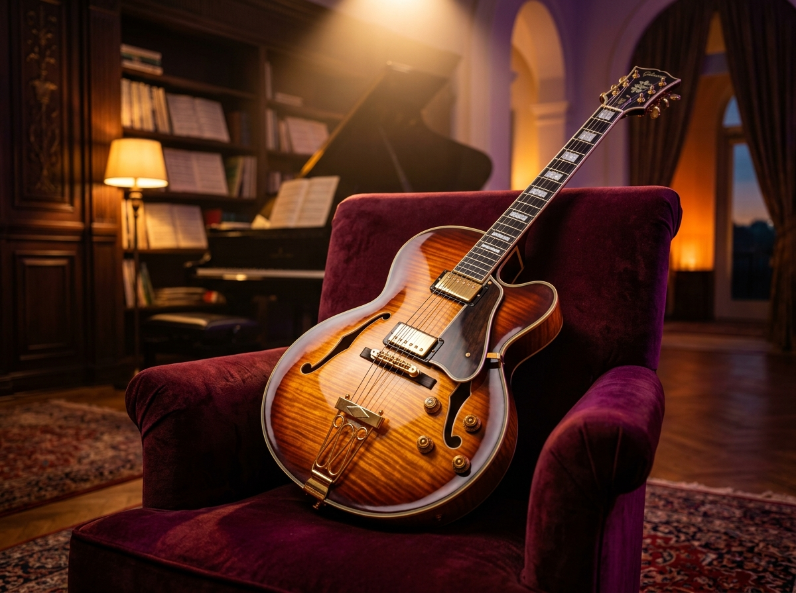
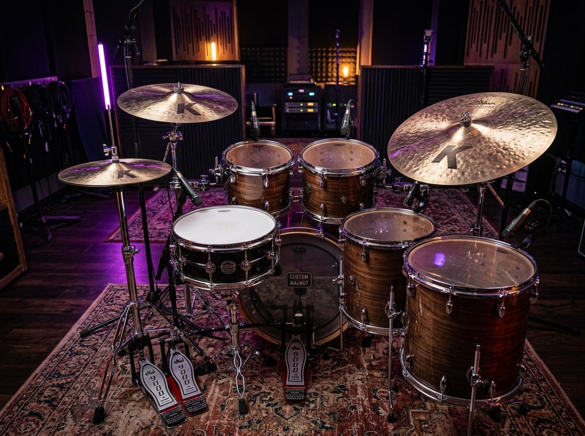

Private instrument tuition, ensemble chamber halls, sound recording suites, and rigorous conservatory curricula tailored for young visionaries and adult connoisseurs.
Rigorous classical sonatas, modern harmonic fusion, and private artist mentorship using world-class concert instruments.
Two-hand polyphonic counterpoint, Chopin nocturnes, Beethoven sonatinas & Trinity honors diploma preparation.

Fingerstyle contrapuntal voicings, jazz modal substitutions, Bach lute suites & contemporary flamenco agility.

Four-way independent metric modulation, syncopated polyrhythms, Latin Afro-Cuban claves & studio session chops.
Pure intonation, spiccato & martelé bow physics, Paganini caprices & chamber orchestra leadership.
Every conservatory virtuoso must build flawless internal rhythm. Our interactive digital mechanical metronome generates high-definition audio clicks, animated pendulum physics, and instant tap tempo calculation.
From foundational rhythmic motor control to international concert diplomas.
C Major, G Major, and A Minor single-octave scales with uniform finger strike velocity and correct wrist curvature.
Clapping syncopated 4/4 and 3/4 measures on first sight, singing back pitched melodies, and distinguishing crescendo from diminuendo.
3 chosen performance pieces with dynamic expression (piano to forte) evaluated by certified Trinity London external examiners.
Major & harmonic minor two-octave scales with thumb-under transitions and chromatic runs across the full instrument register.
Recognizing perfect fourths, major thirds, relative minors, and executing 8-measure sight-reading with key signature modulations.
Clementi sonatinas, blues improvisation, rubato expression, and multi-movement technical suite mastery.
Three-octave contrary motion scales, diminished seventh arpeggios, rapid staccato octave leaps, and metric modulation.
Transposition at sight, identification of secondary dominants, and complex 5/4 & 7/8 modern polyrhythmic dictation.
Full concert recital program (30 minutes continuous playing), culminating in the ATCL / LTCL Associate Diploma certification.
Four dedicated acoustically isolated pods engineered with floating concrete slabs and diffusion clouds for uncompromised acoustic clarity.
Tailored training tracks designed for technical virtuosity, stage readiness, and formal accreditation.
Early childhood ear cultivation, rhythmic motor memory, and foundational posture on piano, violin, or acoustic guitar.
Intensive technical mastership covering sight-reading, aural recognition, complex polyrhythms, and high-difficulty performance grades (Grades 3 through 8).
Designed specifically for working adults. Flexible evening timings, relaxed masterclass environment, and weekend chamber jam sessions.
Our Senior Academic Dean consults with prospective students and families. We evaluate technical dexterity, recommend optimal batch levels, and provide private tours of our acoustic rehearsal suites.